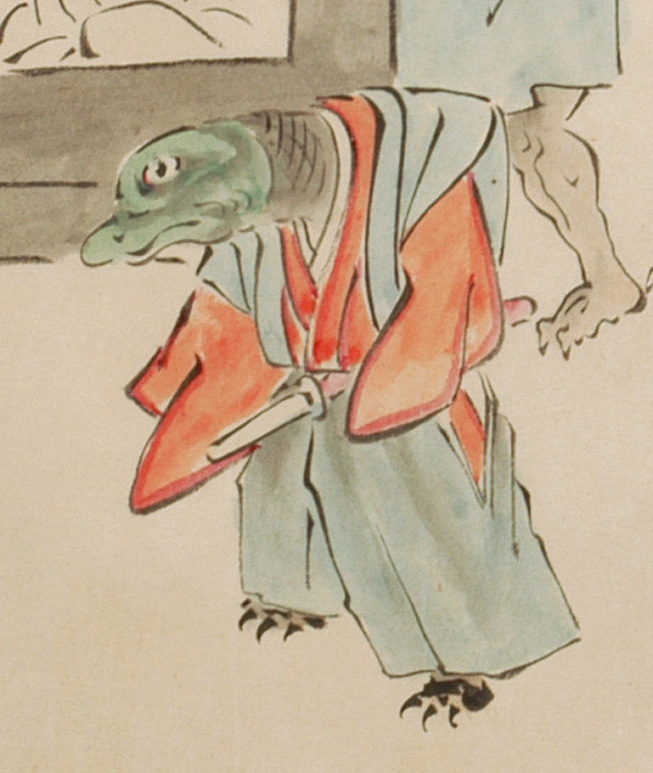

蜥蜴のような一つ目の化物。赤色の着物に青色の裃を着け、脇差を差している。頭部は緑色で、鼻と耳がなく、口元が突き出ている。首は太く、前に突き伸ばしている。足指は爪のみで、爬虫類のように見える。
出典：親書誌：U426_nichibunken_0053：化物婚礼絵巻；バケモノコンレイエマキ／日付：2006／資源識別子：U426_nichibunken_0053_0014_0001
Copyright (c)2010- International Research Center for Japanese Studies, Kyoto, Japan. All rights reserved.